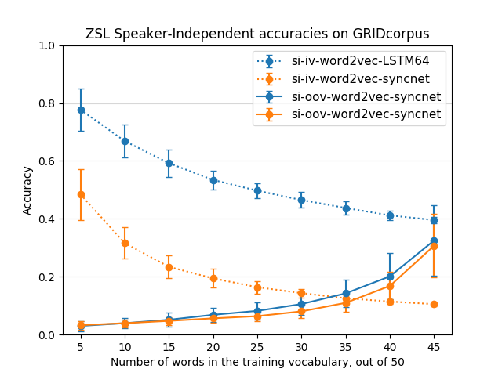

Figure 1: Comparison of ZSL with lipreader features vs with Syncnet features - Speaker-dependent, out-of-vocabulary

Figure 2: Comparison of ZSL with lipreader features vs with Syncnet features - Speaker-INdependent
Got SyncNet pre-trained weights from Joon Soon Chung
Figured out ACTUAL SyncNet architecture (set up in Keras)
Used SyncNet for ZSL - abysmal results
Maybe extract features in a better way?